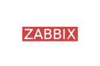
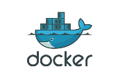
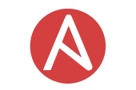
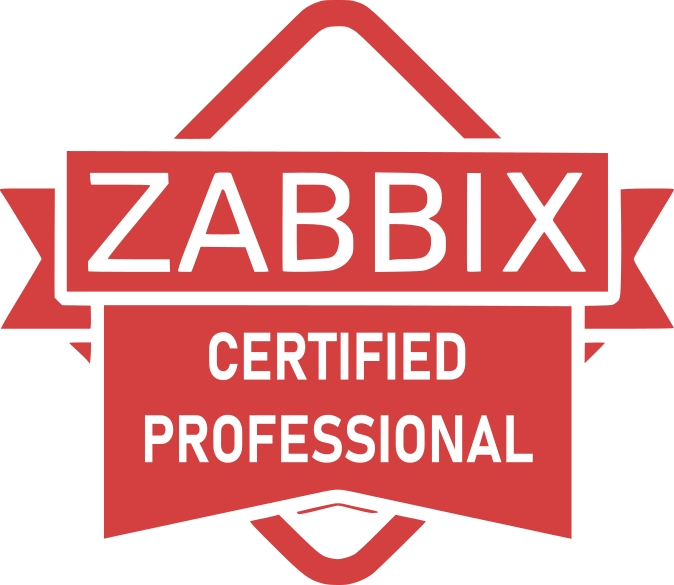
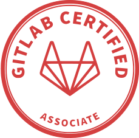

Monitoramento & Observabilidade
Zabbix, discovery, templates, triggers, LLD, integrações por API, dashboards e alertas orientados a impacto.
Sou Lucas Padilia, profissional de TI com atuação em DevOps, automação, monitoramento e infraestrutura. Trabalho para transformar ambientes críticos em operações previsíveis, rastreáveis e com menos intervenção manual.
Profissional de TI com sólida atuação em DevOps, automação, monitoramento e infraestrutura. Minha base técnica combina operação Linux, containers, redes, virtualização, pipelines e integrações por API para sustentar ambientes críticos.
O objetivo é simples: reduzir risco operacional, melhorar visibilidade, padronizar deploys e criar mecanismos de resposta rápida sem abrir mão de controle, rastreabilidade e boas práticas de segurança.
Zabbix, discovery, templates, triggers, LLD, integrações por API, dashboards e alertas orientados a impacto.
Ansible, shell scripts, validações, padronização de deploys e rotinas repetíveis para reduzir erro humano.
Docker, Compose, Swarm, GitLab Runner, pipelines de validação, deploy controlado e rollback operacional.
Resumo baseado nas informações públicas do perfil LinkedIn informado.
Atuação voltada à operação e evolução de ambientes de TI, com foco em disponibilidade, observabilidade, automação e sustentação de serviços críticos.

Zabbix
Docker
Ansible
